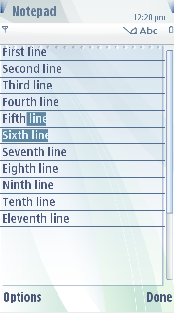
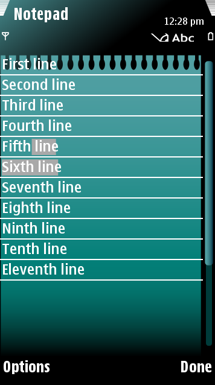

Notepad
The Notepad application has two types of customizable backgrounds:
- First page frame
- Continuous page frame
The first page frame has a different “notes“
header than the continuous page frame. These components can be either
one-piece or nine-piece images.The figure below illustrates a default
Notepad and a customized Notepad.
 
Figure:
Default and customized Notepad